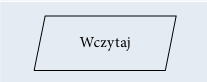
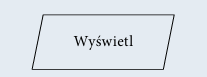
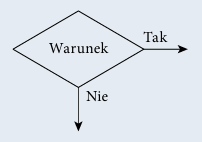
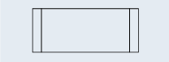
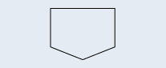

Język programowania służy do tworzenia programów komputerowych, których zada niem jest przetwarzanie danych, wykonywanie obliczeń i algorytmów. Może zawierać konstrukcje składniowe do manipulowania strukturami danych i zarządzania prze pływem sterowania. Niektóre języki programowania mają specyfikację swojej składni i semantyki, inne zdefiniowane są jedynie przez oficjalne implementacje.
Paradygmat programowania to pewien wzorzec określający sposób pisania i wykonania programu komputerowego. Języki programowania korzystają z różnych paradygmatów. Paradygmaty programowania opisują między innymi programowanie:
Skrypt to napisany w języku skryptowym program, który jest wykonywany wewnątrz aplikacji.
Język skryptowy to język programowania służący do wykonywania wyspecjalizowa nych czynności. Języki skryptowe są tworzone z myślą o interakcji z użytkownikiem. Często są wykorzystywane do zadań administracyjnych. Bywają również osadzane w programach w celu zautomatyzowania powtarzających się czynności. Są używane do tworzenia dynamicznych stron internetowych. Stosowane w grach komputerowych służą do sterowania przebiegiem gry.
Algorytm przetwarzania danych powinien przy takim samym zbiorze danych wejścio wych zwracać zawsze taki sam wynik. Ale stanie się tak tylko w dokładnie takich sa mych warunkach i przy tych samych danych pomocniczych. Zwykle przy projektowaniu algorytmu zakłada się, że dane wejściowe są poprawne, ale bywają algorytmy, które nie tylko przetwarzają dane, lecz również je weryfikują.
| Początek algorytmu, start programu. Od tego miejsca rozpoczyna się wykonywanie operacji | |
| Koniec algorytmu, zakończenie programu. W tym miejscu nastę puje zakończenie wykonywania operacji. | |
| Połączenie między blokami. Wskazuje kolejność wykonywania operacji. | |
| Wykonanie operacji, blok obliczeniowy. Wewnątrz tego symbolu znajdują się operacje do wykonania. | |
|  | Wprowadzanie danych. Wewnątrz tego symbolu określamy dane wejściowe, które muszą zostać wczytane. |
|  | Wyprowadzanie danych. Wewnątrz tego symbolu określamy dane wyjściowe, które powinny zostać wyprowadzone jako wynik. |
|  | Warunek logiczny, blok decyzyjny. Umożliwia tworzenie rozga łęzień w algorytmie. Jeżeli warunek jest spełniony, to następuje przejście do gałęzi oznaczonej „Tak”, w przeciwnym razie nastę puje przejście do gałęzi oznaczonej „Nie”. |
|  | Proces wstępnie zdefiniowany. Symbol ten oznacza dołączenie podprogramu. |
| Łącznik. Odwołanie na stronie. Służy do oznaczenia miejsc łączenia schematu, na przykład gdyby linie łączące na schemacie musiały się krzyżować. | |
|  | Łącznik międzystronicowy. Służy do oznaczenia miejsc łączenia schematu, gdy nie mieści się on na jednej stronie. |